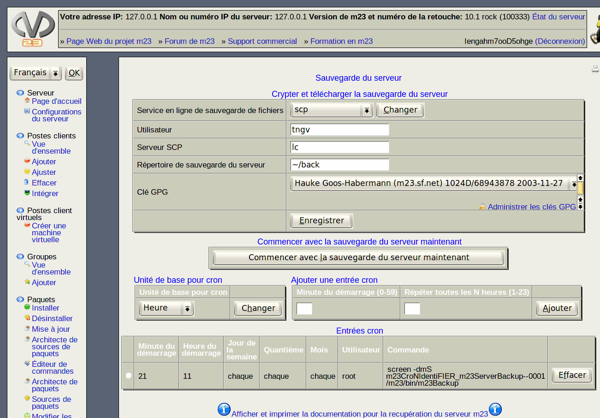

Ce dialogue vous aide à sauvegarder votre serveur m23 automatiquement à intervalles réguliers. Les sauvegardes contiennent la configuration du système d'exploitation et la liste des paquets installés en plus des fichiers nécessaires pour la restauration du serveur m23. En utilisant ces informations, il est possible de régénérer le serveur m23 après une perte de données ou quelconque endommagement dans le dernier état sauvegardé. Les données sauvegardées peuvent être téléchargées sur un serveur externe à votre propre réseau ou sur internet après qu'elles aient été cryptées avec GPG pour être à l'abris d'accès indésirés.

Le dialogue de sauvegarde, chiffrement et téléchargement est partagé en deux parties.
- Crypter et téléverser la sauvegarde sur un serveur distant ou externe: Cette partie traite du chiffrement des données à sauvegarder et de la copie sur un serveur tierce.
- Paramètres pour cron: Les paramètres pour le démon cron déterminent à quelles échéances le serveur m23 doit être sauvegardé automatiquement.
Sous-sections
dodger
2012-12-10